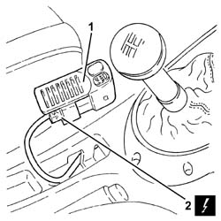

3350A10 ASR DISENGAGEMENT SWITCH - R R
- Path
- Procedures > 33 BRAKING SYSTEM > 3350 DRIVE CONTROL > 3350A ANTI - SPIN REGULATION DEVICES > 3350A10 ASR DISENGAGEMENT SWITCH - R R
- Kind
- repair procedure (removal / refitting; the operation number is the code)
- Applies to
- all engines; all production periods
- Interactive page
- https://sloeber94.github.io/elrnDB-aGt/en/#/125001381
Applies to: all engines; all production periods
 Removing
Removing
 Refitting
RefittingMake sure that the ignition key is in the OFF position, then disconnect the negative battery terminal (-)
Description | Connector | |
|---|---|---|
- | Battery | See A1B BATTERY ( BATTERY NEGATIVE ) |
1. Prise the panel with ASR drive control deactivation switch out of its seat on the central console.
2. Disconnect the electrical connection from the ASR drive control deactivation switch.
Description | Connector | |
|---|---|---|
2 | Switches on tunnel | See H35 SWITCHES ON TUNNEL ( CONNECTORS ) |
Remove the panel complete with the ASR drive control deactivation switch

Applies to: all engines; all production periods
Refitting
RemovingConnect the electrical connection to the ASR drive control deactivation switch.
Replace the panel with ASR drive control deactivation switch in its seat on the central console.
Connect the negative battery terminal (-).